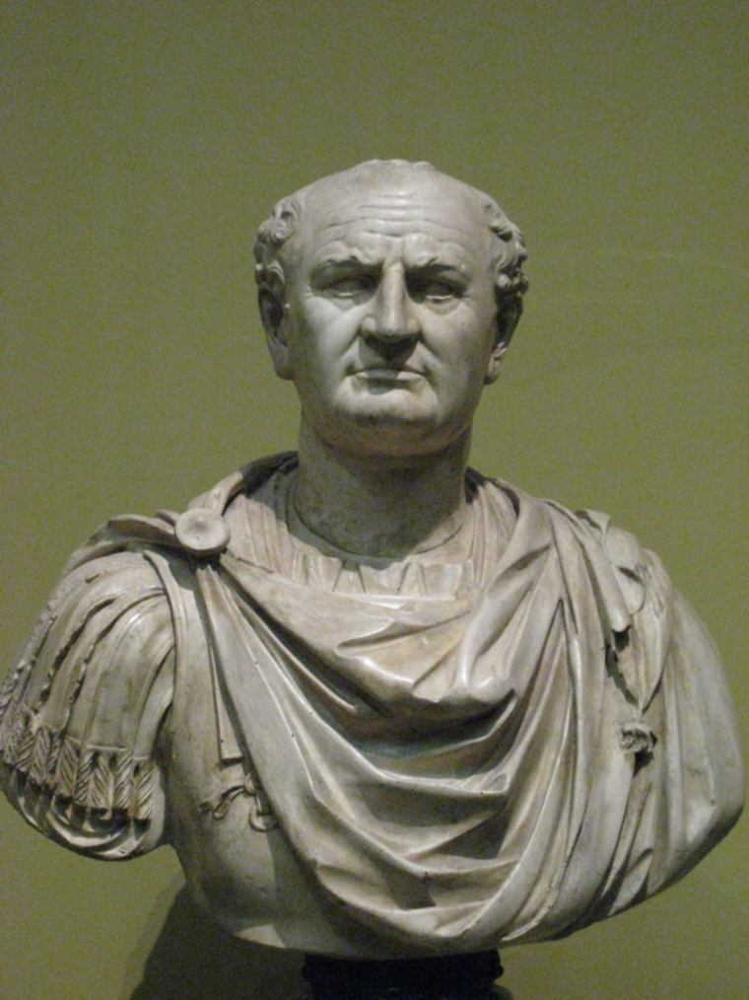
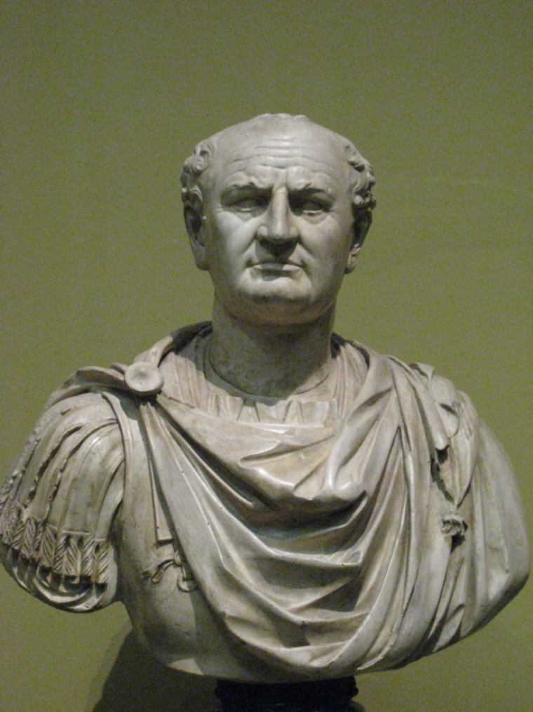
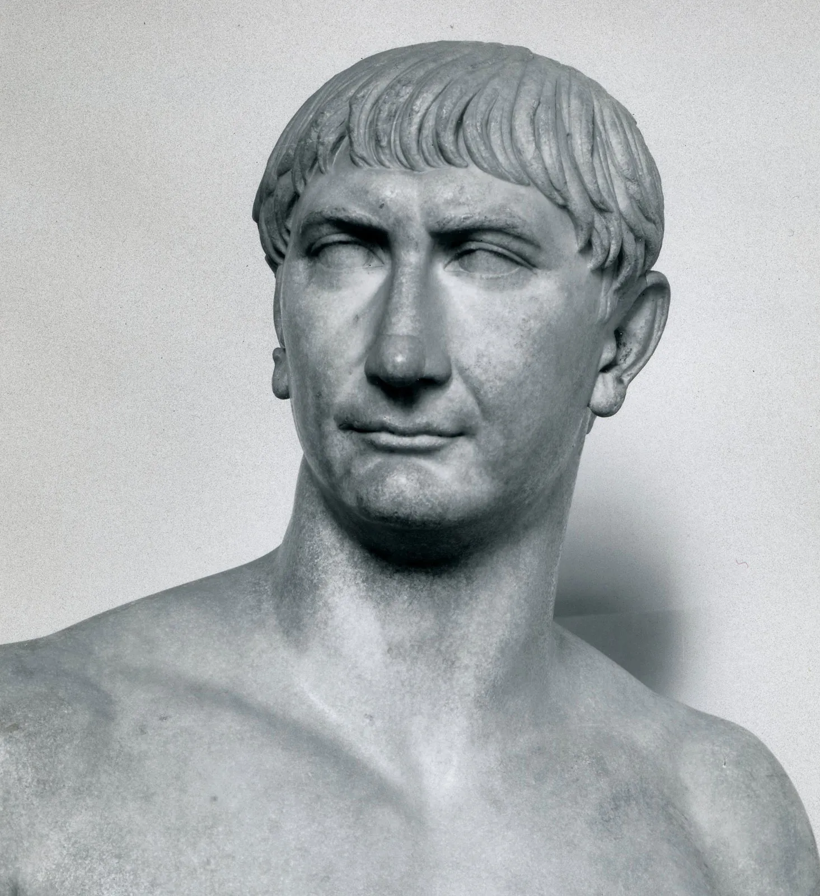
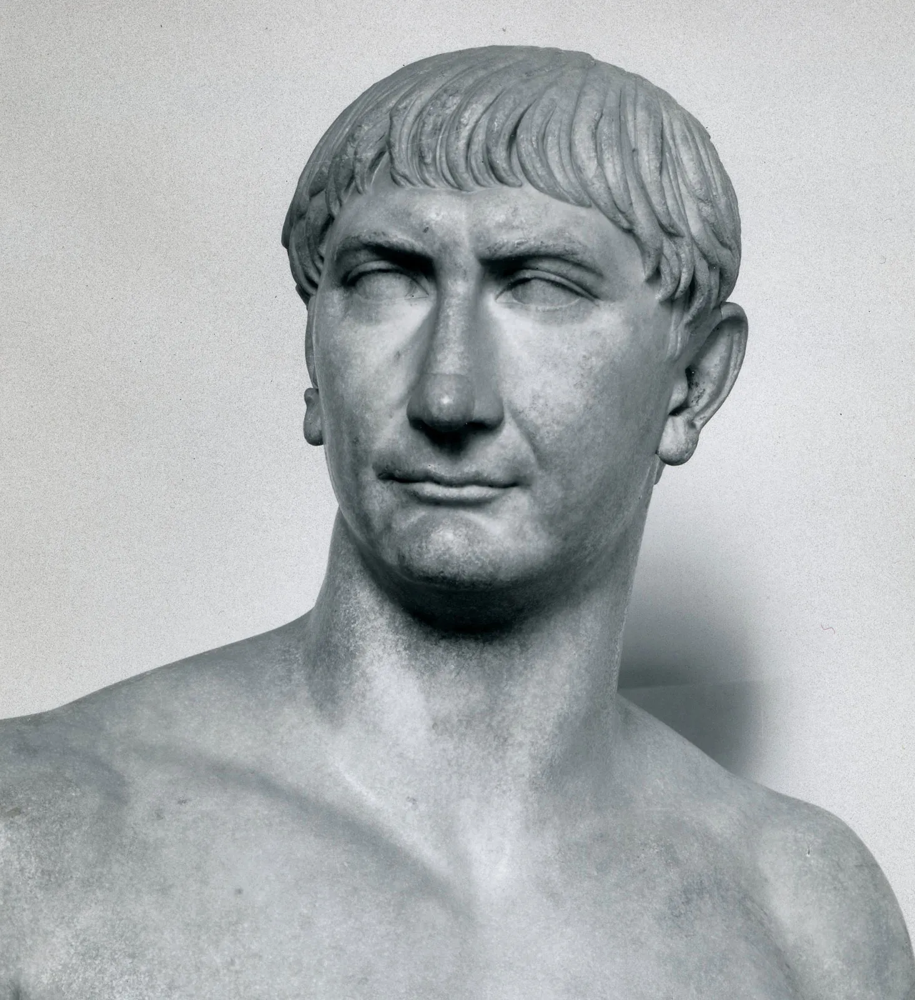
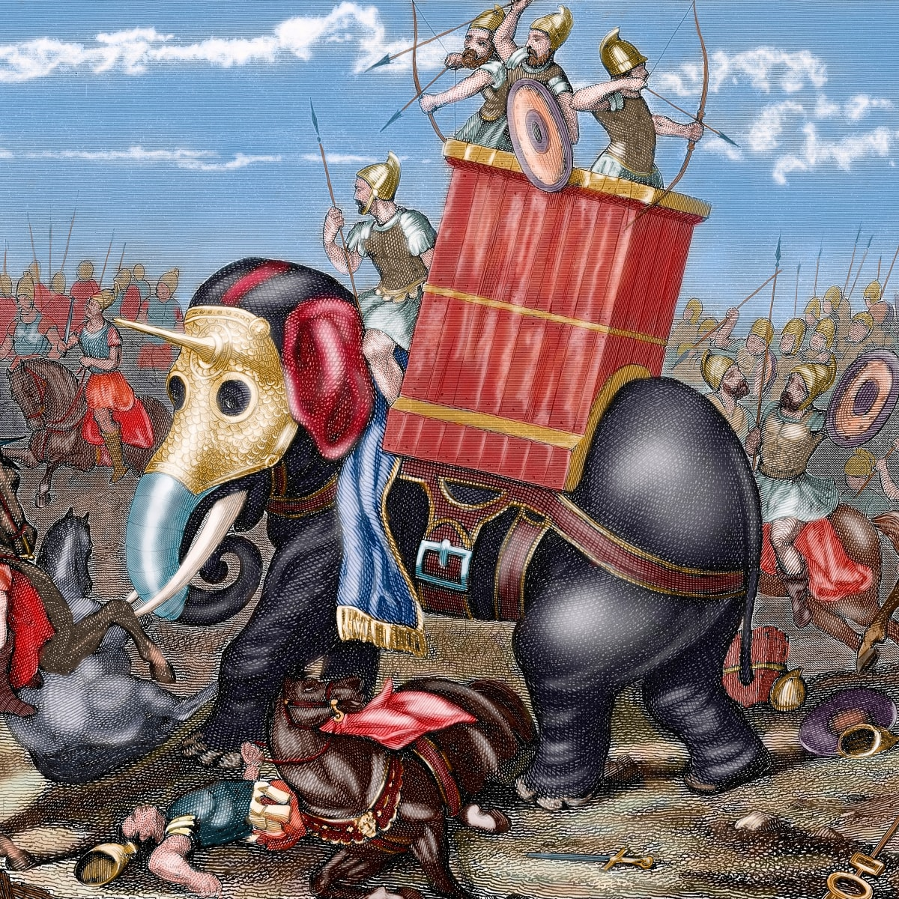
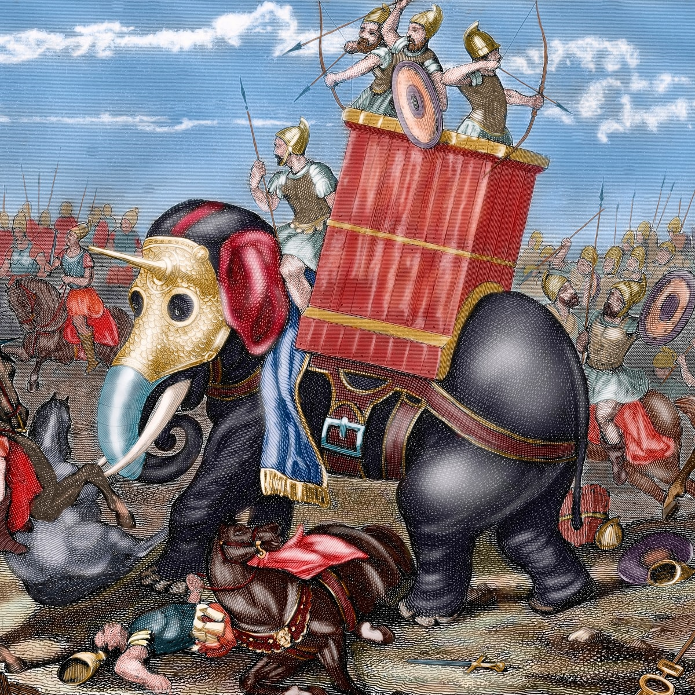

Augustus, also called Augustus Caesar or (until 27 BCE) Octavian, original name Gaius Octavius, adopted name Gaius Julius Caesar Octavianus, (born September 23, 63 BCE—died August 19, 14 CE, Nola, near Naples [Italy]), first Roman emperor, following the republic, which had been finally destroyed by the dictatorship of Julius Caesar, his great-uncle and adoptive father. His autocratic regime is known as the principate because he was the princeps, the first citizen, at the head of that array of outwardly revived republican institutions that alone made his autocracy palatable. With unlimited patience, skill, and efficiency, he overhauled every aspect of Roman life and brought durable peace and prosperity to the Greco-Roman world.
.jpg)
Claudius, in full Tiberius Claudius Caesar Augustus Germanicus, original name (until 41 CE) Tiberius Claudius Nero Germanicus, (born August 1, 10 BCE, Lugdunum [Lyon], Gaul—died October 13, 54 CE), Roman emperor (41–54 CE), who extended Roman rule in North Africa and made Britain a province.

Vespasian, Latin in full Caesar Vespasianus Augustus, original name Titus Flavius Vespasianus, (born November 17?, AD 9, Reate [Rieti], Latium—died June 24, 79), Roman emperor (AD 69–79) who, though of humble birth, became the founder of the Flavian dynasty after the civil wars that followed Nero’s death in 68. His fiscal reforms and consolidation of the empire generated political stability and a vast Roman building program.


Trajan, Latin in full Caesar Divi Nervae Filius Nerva Traianus Optimus Augustus, also called (97–98 CE) Caesar Nerva Traianus Germanicus, original name Marcus Ulpius Traianus, (born September 15?, 53 CE, Italica, Baetica [now in Spain]—died August 8/9, 117, Selinus, Cilicia [now in Turkey]), Roman emperor (98–117 CE) who sought to extend the boundaries of the empire to the east (notably in Dacia, Arabia, Armenia, and Mesopotamia), undertook a vast building program, and enlarged social welfare.


The Roman Republic was founded in 509 B.C.E. after the last Etruscan king that ruled Rome was overthrown. Rome's next government served as a representative democracy in the form of a republic. Initially, Rome's wealthiest families, the patricians, held power and only they could hold political or religious offices.

The Latin War (340–338 bc) was quickly decided in Rome's favour. Virtually all of Latium was given Roman citizenship and became Roman territory, but the towns retained their local governments. The large states of Praeneste and Tibur maintained nominal independence by becoming Rome's military allies.
Punic Wars, also called Carthaginian Wars, (264–146 bce), a series of three wars between the Roman Republic and the Carthaginian (Punic) empire, resulting in the destruction of Carthage, the enslavement of its population, and Roman hegemony over the western Mediterranean.

